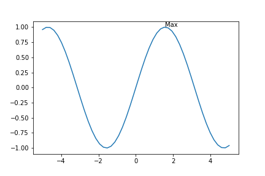
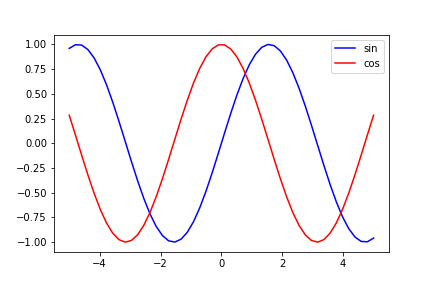

Matplotlib使用教程(四)：标注与图例
2020-03-19
# python常用库
text标注
text用于直接在图像中的任意位置进行标注，传入参数包括：x，y，s，fontsize，fontstyle，fontweight
x为横坐标
y为纵坐标
s为标注字符串
fontsize/fontstyle/fontweight为字体设置
1 | X = np.linspace(-5, 5) |

annotate标注
annotate用于给图像中的某个点进行标注，调用plt.annotate方法即可，传入参数包括：s，xy，xytext，textcoords，fontsize，fontstyle，fontweight
s为标注字符串
xy为被标注点位置坐标
xytext为标注文字的坐标(一般与textcoords=’offset points’连用，此时坐标为相对于xy的偏移值)
textcoords一般传入’offset points’
fontsize/fontstyle/fontweight为字体设置
1 | X = np.linspace(-5, 5) |
添加图例
调用plt.legend方法即可给一张figure中的不同曲线添加图例标注，直接传入一个图例名称列表1
2
3
4
5
6
7
8
9
10X = np.linspace(-5, 5)
y1 = np.sin(X)
y2 = np.cos(X)
plt.figure()
plt.plot(X, y1)
plt.plot(X, y2)
plt.legend(['sin', 'cos'])
plt.show()
